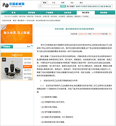

恒升飞科技
简介
深圳市恒升飞科技有限公司是一家专业从事自动化设备、智能化生产设备的研发、生产、销售一体的高科技企业。为推广公司产品，恒升飞科技需要迅速提升品牌知名度与影响力，全方位快速进入自动化设备市场。,恒升飞科技需要迅速提升品牌知名度与影响力,全方位快速进入自动化设备市场。
投放策略
企业百科+新闻营销
1.通过创建品牌百度百科，打造企业百度名片；通过百度问答、百度文库等消息传播，提升品牌形象和口碑；通过百度贴吧等发布专业营销软文，提升品牌知名度与影响力。
2.在权威媒体央视网投放新闻软文稿，通过中国机械网、慧聪机械等垂直行业媒体投放新闻，增加品牌知名度与影响力。
推广效果
曝光率 交易额增长
800,000PV 72%
合作媒体
 400-9635-660
400-9635-660 banban@bounb.com
banban@bounb.com 广东省深圳市南山区科技园北区朗山路13号紫光信息港C栋4层
广东省深圳市南山区科技园北区朗山路13号紫光信息港C栋4层